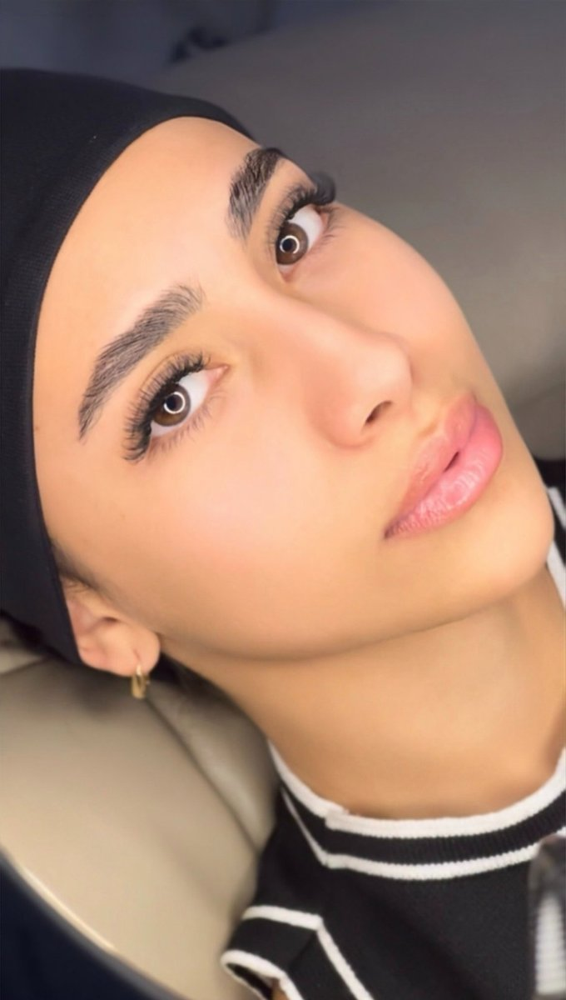
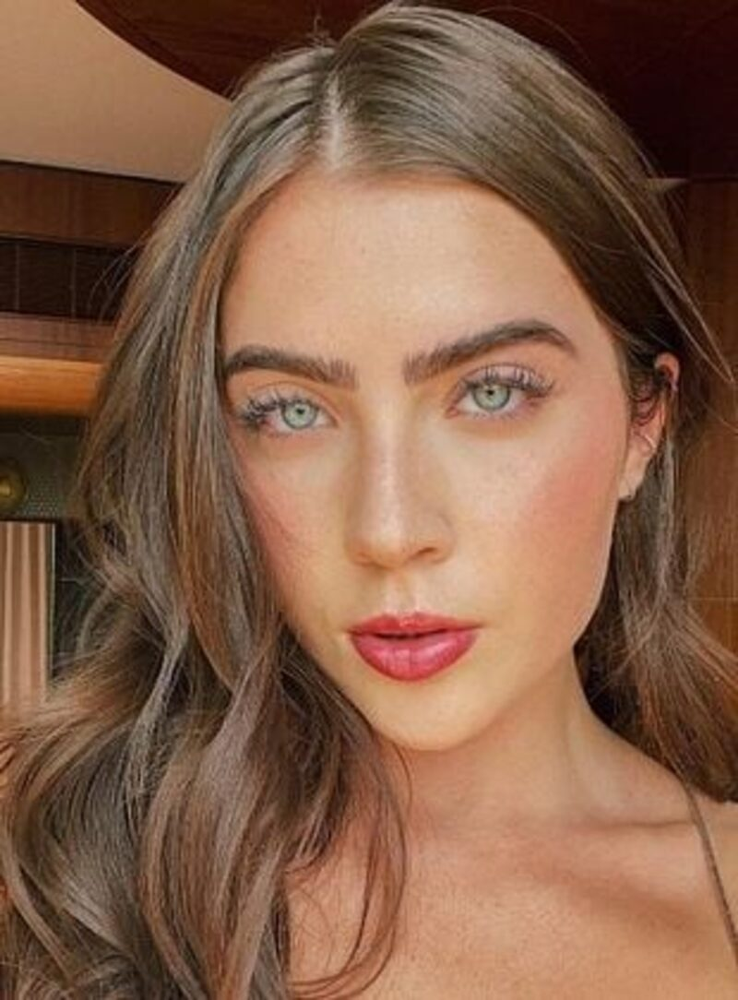
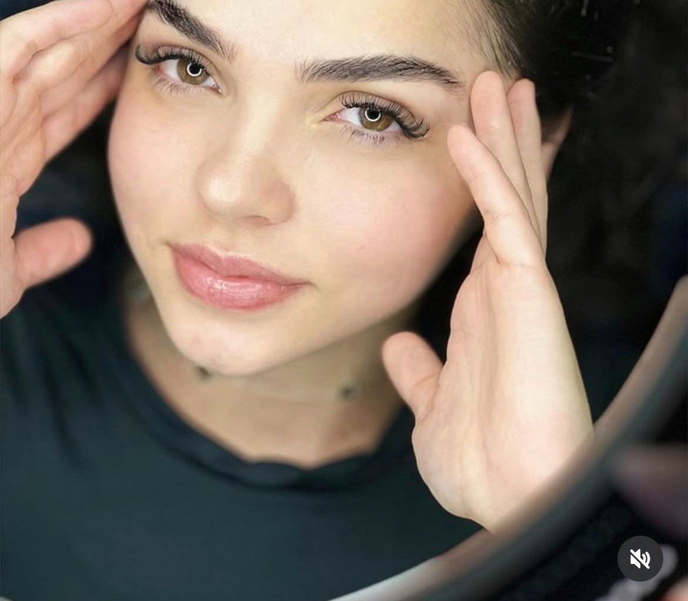

Fio a fio, volume brasileiro, russo, híbrido ou lash lifting: encontramos a técnica perfeita para realçar o seu olhar, com naturalidade e durabilidade. Bem pertinho de você, no coração do Tatuapé.
Agendar avaliação grátis
Cada técnica entrega um efeito diferente. Na avaliação, encontramos a ideal para o formato do seu olho e o seu estilo.
Curva e eleva os seus cílios naturais, sem aplicar fios. Efeito de olhar aberto e alongado, 100% natural.
Um fio de extensão sobre cada cílio natural. O clássico efeito natural, elegante e leve.
Pequenos leques que dão volume marcante mantendo a naturalidade. A técnica queridinha do momento.
Leques densos que criam um olhar cheio e dramático. Para quem ama um resultado poderoso.
Mistura de fio a fio e volume, para um resultado entre o natural e o volumoso. O melhor dos dois mundos.
O efeito natural e molhado que virou febre, com aspecto de rímel recém-passado. Leve e despojado.
| Técnica | Resultado |
|---|---|
| Lash Lifting | Natural, sem aplicar fios |
| Fio a fio | Muito natural e discreto |
| Volume Brasileiro | Natural com mais volume |
| Híbrido | Entre o natural e o volumoso |
| Volume Russo | Denso e dramático |
Sabe aquele olhar natural e molhado que virou febre? É o efeito wispy, também chamado de efeito Jade Picon: cílios com aspecto de rímel recém-passado, leves e despojados.
É a escolha perfeita para quem quer realçar o olhar sem exageros — bonito, natural e discreto ao mesmo tempo. E o segredo de um resultado impecável está no mapeamento certo para o seu formato de olho.
Quero esse efeito

Porque cada olhar merece técnica, cuidado e tempo. Aqui, cada aplicação começa por uma avaliação do seu formato de olho — nada de fórmula pronta.
Com mais de 700 procedimentos realizados e nota máxima no Google, você entrega o seu olhar a mãos experientes, num ambiente premium, com café e manobrista no prédio.
E o melhor: bem pertinho de você, ao lado do Shopping Metrô Tatuapé.
O Bella Beauty Club faz extensão de cílios no Tatuapé (fio a fio, volume brasileiro, russo, híbrido e lash lifting), a 5 minutos do Metrô e ao lado do Shopping Metrô Tatuapé. Atende Tatuapé, Anália Franco, Vila Carrão e Mooca, com nota 5,0 no Google e avaliação gratuita pelo WhatsApp.
O Bella Beauty Club fica no Edifício Platina (Rua Bom Sucesso, 220), a 5 minutos do Metrô Tatuapé e ao lado do Shopping Metrô Tatuapé. Atendemos Tatuapé, Anália Franco, Vila Carrão e Mooca.
O lash lifting e o fio a fio são as mais naturais. O volume brasileiro traz um pouco mais de volume mantendo naturalidade. Já o russo é mais denso e marcante. Na avaliação, indicamos a ideal para o seu olhar.
Em média de 3 a 4 semanas, acompanhando o ciclo natural dos fios. Para manter sempre cheio, recomenda-se manutenção a cada 2 a 3 semanas.
Não, quando feita por profissional qualificado, com fios adequados e boa técnica de isolamento. Aqui, cada aplicação respeita a saúde do seu cílio natural.
É uma técnica que curva e eleva os cílios naturais, dando efeito de cílios mais longos e abertos, sem aplicar fios. Ideal para um resultado natural.
Avaliação gratuita pelo WhatsApp. Bem pertinho de você, no Tatuapé.
Quero Minha Avaliação Grátis